| 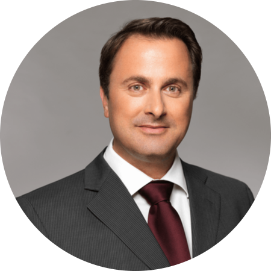 | 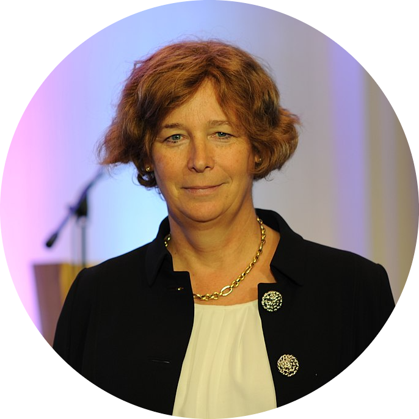 | 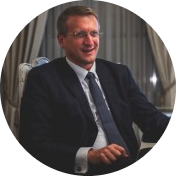 |
Xavier BettelPrime Minister of Luxembourg |
Petra De SutterDeputy Prime Minister of Belgium |
Thomas LambertAmbassador of Belgium to Luxembourg |
| 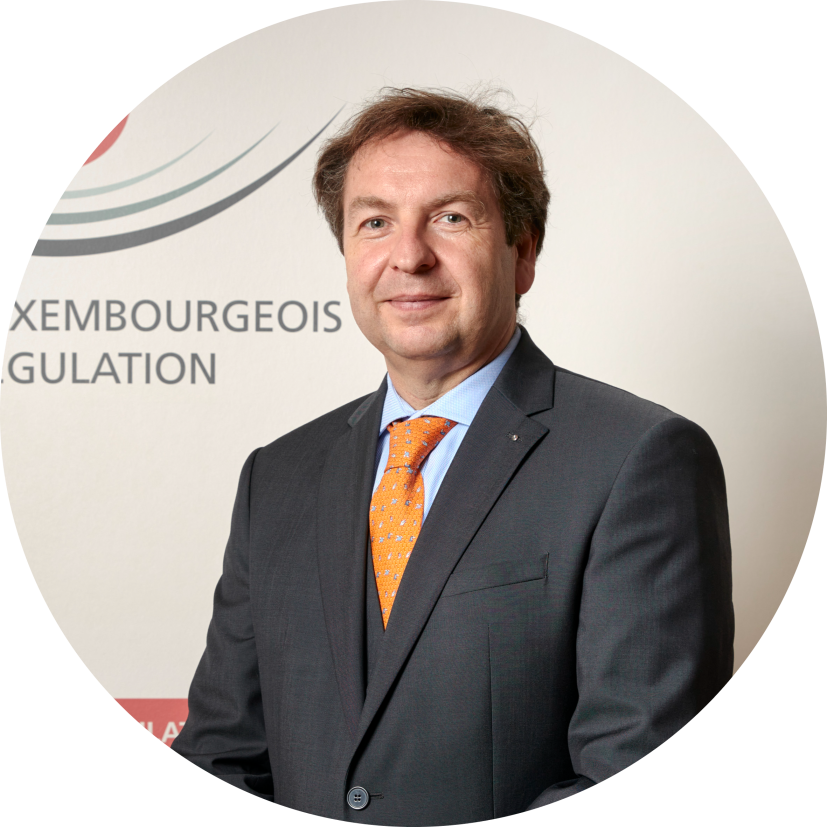 | ||
Luc TapellaDirector, Institut Luxembourgeois de Régulation (ILR) |
Bernardo HermanExecutive Board Member, Belgian Institute for Postal services and Telecommunications (BIPT) |
Philip WestbroekOT Security officer, ENEXIS |

|
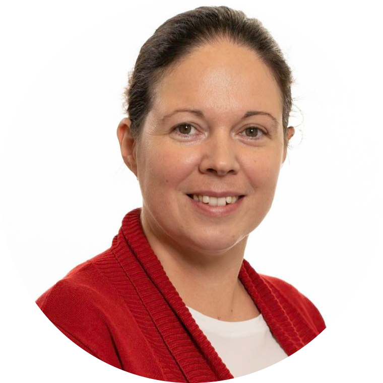 | |
Steve MullerCyber Security Specialist, Luxembourg Ministry of the Economy |
Céline TarraubeAdviser Digital and Innovation, FEDIL |
Cynthia WagnerSecurity Manager and Chief Information Security Officer, Fondation RESTENA |
| 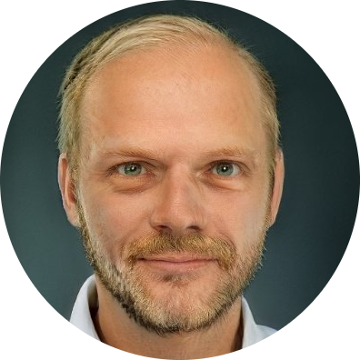 | 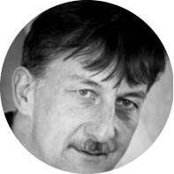 | |
Dirk JumpertzSecurity officer, EURid |
Kristof TuyteleersCyber and Information Security Officer, DNS Belgium |
Jacques FederspielChief Information Security Officer, Hôpitaux Robert Schuman |
Rémi PrimeChief Information Security Officer, LuxITH |
Didier BarzinChief Information Security Officer, Centre Hospitalier Emile Mayrisch |
Sheila BeckerHead of Network and Information Systems’ Security, Institut Luxembourgeois de Régulation (ILR) |
| 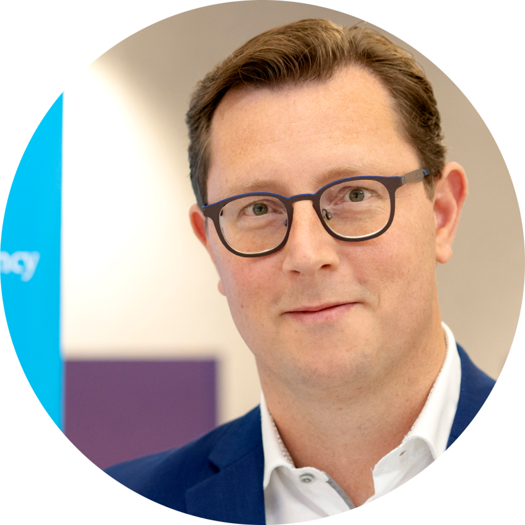 | ||
Tim MasyEngineer-Advisor, Belgian Institute for Postal services and Telecommunications (BIPT) |
Valéry Vander GeetenLegal Officer Senior & DPO, Centre for Cyber security Belgium (CCB) |
Jasper NagtegaalHead Department Digital Resilience, Agentschap Telecom |
| 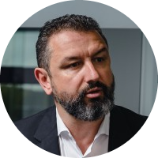 | 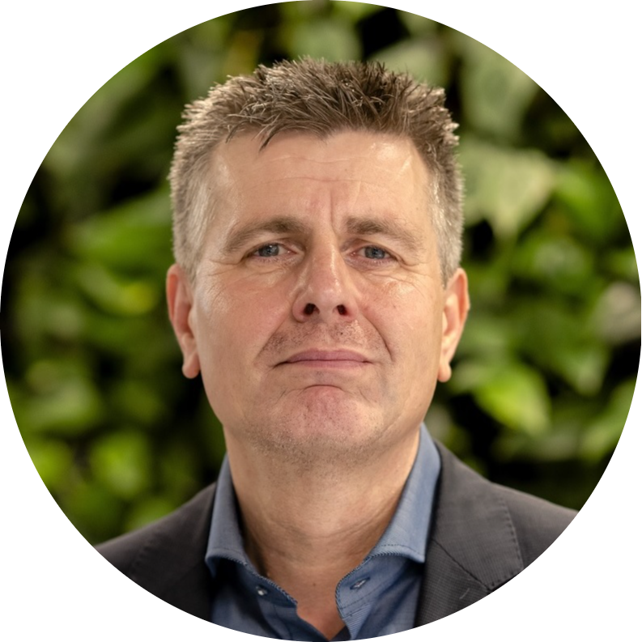 | |
Christophe BiancoManaging Partner, Excellium Services |
Rob AugustinusInspector Specialist, Agentschap Telecom |
Boryana HristovaLegal officer, European Commission, DG Communications Networks, Content and Technology, Cybersecurity and Digital Privacy |

|
||
Sandra SchmitzPostdoctoral researcher in law at Interdisciplinary Centre for Security, Reliability and Trust (SnT)/University of Luxembourg |
Anne KlebschTeam lead, Customer Success, SecurityScoreCard |
Guillaume-Jean Herbiet.lu Technical Manager, Fondation RESTENA |
| 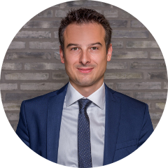 | ||
Georgia BafoutsouSeconded National Expert, European Union Agency for Cybersecurity (ENISA) |
Nicolas MayerSenior Research & Technology Associate, Luxembourg Institute of Science and Technology (LIST) |
Fabien MatheyHead of Cyberworld Awareness & Security Enhancement Services Department, SECURITYMADEIN.LU |
| 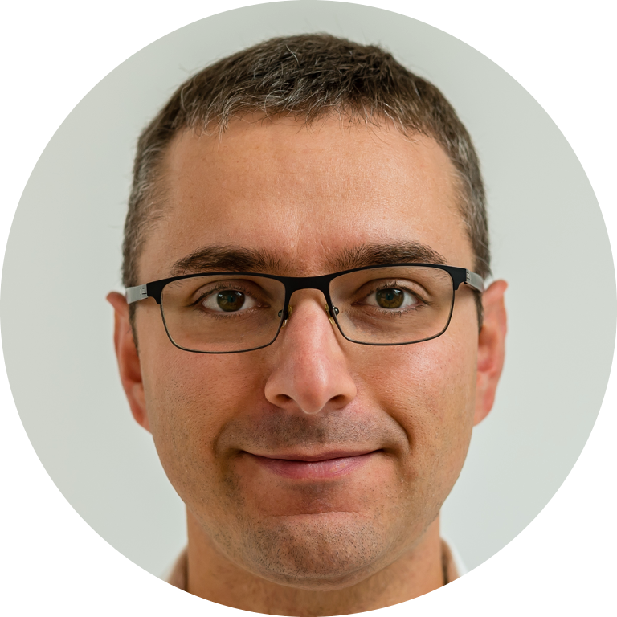 | ||
Cécile GellenoncourtService Line Head Supervision of Information systems and Support PFS, Commission de Surveillance du Secteur Financier (CSSF) |
Jean De ChillouIT Supervisor, Commission de Surveillance du Secteur Financier (CSSF) |
Alexandre DulaunoySecurity researcher, Computer Incident Response Center Luxembourg (CIRCL) |
Dalia KhaderInformation Security Manager / Divisional CISO, Swiss Life Global Solutions |
Krystina GrayCountry CISO and Head of Resilience Risk, HSBC |
Sabika IshaqInformation Security Officer, Grant Thornton Luxembourg |
| 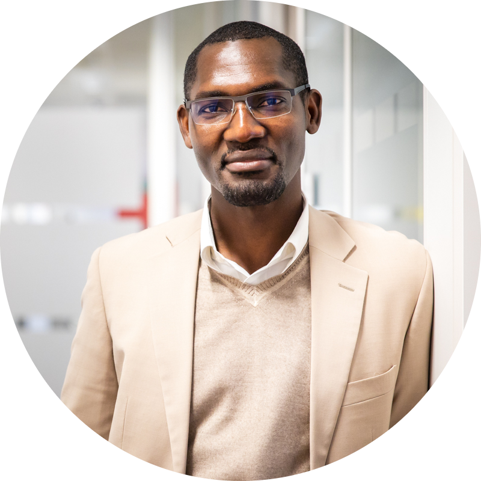 | ||
Aline MoyretGRC Lead Advisor, EBRC - European Business Reliance Centre |
Shenglan HuInformation Security Officer, POST Luxembourg |
Moussa OuedraogoHead of Enterprise and Cybersecurity, Fujitsu Luxembourg |
| 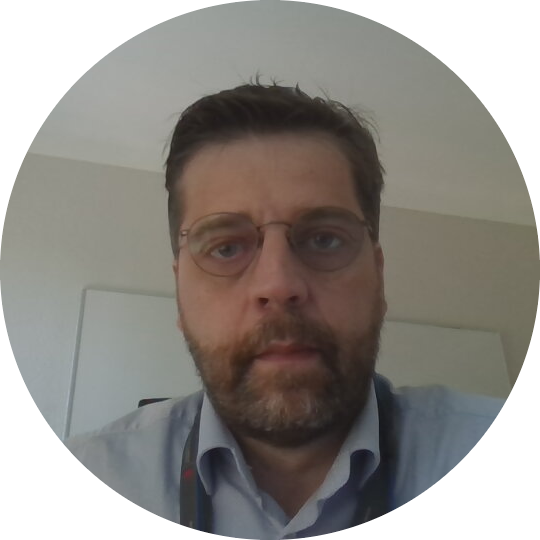 | 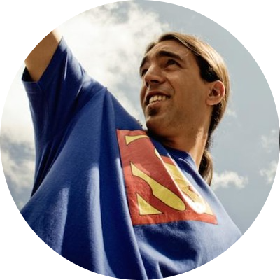 | |
Karl DobbelaerePolicy Manager, Centre for Cyber security Belgium (CCB) |
Paul RheinManaging Director, GOVCERT |
Jocelyn AubertResearch & Technology Associate, Luxembourg Institute of Science and Technology (LIST) |
Hervé CholezResearch & Technology Associate, Luxembourg Institute of Science and Technology (LIST) |
||
Biographies
Xavier Bettel |
|
|
Luxembourg Prime Minister,
Minister of State Minister for Communications and Media Minister for Religious Affairs Minister for Digitalisation Minister for Administrative Reform |
To the top
Petra De Sutter |
|
| Belgium Deputy Prime Minister and Minister of Public Administration, Public Enterprises, Telecommunication and the Postal Services |
To the top
Thomas Lambert |
|
| Ambassador of Belgium to Luxembourg |
To the top
Luc Tapella |
||
| Director, Institut Luxembourgeois de Régulation (ILR) | ||
|
Luc Tapella started his career as
auditor at Coopers & Lybrand and at
the Luxemburgish bank BCEE
(Banque et Caisse d’Epargne de
l’État), after graduating with
an MSc in Economics from the
University of Aix-en-Provence
(France). |
||
To the top
Bernardo Herman |
||
| Executive Board Member, Belgian Institute for Postal services and Telecommunications (BIPT) | ||
|
Bernardo Herman is responsible for
the Surveillance, NetSec, Postal
Market and IT departments. |
||
To the top
Philip Westbroek |
||
| OT Security officer, Enexis | ||
|
Philip Westbroek works for the Dutch regional grid operator Enexis, he is responsible for OT security. Philip is also a certified IEC 62443 trainer for ISA Europe. He is a cybersecurity and datacommunications enthusiast with more than 20 years’ experience in these fields, he holds a Master degree in information security management. During the past 16 years he was responsible for the design and realisation of a number of smart grid projects. Among these projects were a cryptoserver solution for smart meters and the Enexis Private MVNO solution. This award-winning mobile M2M datacommunications solution enables Enexis to switch from one mobile operator to another without swapping the SIM cards Enexis use in their RTUs, smart meters and other M2M equipment. Philip was the lead implementer of the Enexis ISMS for the OT environment, this ISMS was certified for ISO 27001:2017 in 2020. |
||
To the top
Steve Muller |
||
| Cyber Security Specialist, Luxembourg Ministry of Economy | ||
|
Steve Muller is a cybersecurity enthusiast working for the Ministry of the Economy, Luxembourg, whose goal is to make technology understandable for everyone. To this end, he has given numerous trainings and talks in organisations, companies, schools, as well as at the occasion of various events. |
||
To the top
|
|
Céline Tarraube |
|
| Adviser Digital and Innovation, FEDIL | ||
|
Céline joined FEDIL as an adviser in 2015 to work on Information and Communication Technologies (ICT) related topics. She graduated in Biochemistry (Paris) and in Marketing (Bordeaux). Before joining FEDIL, Céline was in charge of Marketing and Communication of the IT One platform at Farvest and organised among others the annual “ICTSpring Europe” and “IT One Gala”. Before that, she was the owner of a retail shop in parapharmaceutical cosmetics in the city centre of Luxembourg. She began her carrier in Luxembourg in 2006 within Luxinnovation and launched the BioHealth Cluster for Health Sciences and Technologies. |
||
To the top
Cynthia Wagner |
||
| Security Manager and Chief Information Security Officer, Fondation RESTENA | ||
|
Cynthia Wagner is the Chief Information Security Officer and Security Manager at the Restena Foundation, the national research and education network in Luxembourg. Previously, Cynthia was managing the Restena-Computer Security Incident Response Team. She graduated with distinction from the University with a PhD in computer science, where she studied the effects of various data mining approaches on flow measurements for improving security. Besides her daily work, she is currently co-chairing the CENTR (Council of European National Top-Level Domain Registries) Research and Developments Working group and an active member in different working groups at Geant (the collaboration of European National Research and education networks). On a national plan, she is active in various advisory boards and co-founder of Restena's cyberday.lu and the dataprivacyday.lu conference. The more, she is active in teaching. In her spare time, she loves to work in the garden and exploit new receipes in her kitchen (successfully and not) |
||
To the top
Dirk Jumpertz |
||
| Security officer, EURid | ||
|
Dirk Jumpertz is the CISO at EURid
vzw/asbl, the top-level domain
registry operator appointed by the EC
for the .eu, .ею and .ευ
namespace. |
||
To the top
Kristof Tuyteleers |
||
| Cyber and Information Security Officer, DNS Belgium | ||
|
Kristof Tuyteleers is the Chief Information Security Officer at DNS Belgium, the top-Level domain registry for .be, .brussels, and .vlaanderen. He has been active in the internet industry for about two and a half decades and in recent years has specialised in information security management. He is also the co-chair of the CENTR (Council of European National Top-Level Domain Registries) Security working group and an active member of the Belgian Cyber Security Coalition. |
||
To the top
Jacques Federspiel |
||
| Chief Information Security Officer, Hôpitaux Robert Schuman | ||
|
Jacques Federspiel is the Chief Information Security Officer at Hôpitaux Robert Schuman. He has spent over a decade leading healthcare IT and Information Security teams and several Innovation projects. Prior to this, Jacques had more than 22 years’ experience in the financial services sector at Dresdner Bank and Commerzbank in Luxembourg, and he held positions including Head of IT Infrastructure, IT Lead branches in Europe and Deputy Director International Applications and Integration Europe. Mr. Federspiel is also a VAE (Validation des acquis d‘expériences) at Ministry of Education, Trainer at Lifelong Learning Luxembourg Center at CSL, Board member of group "Formation professionnelle" at Chambre de Commerce and Ministry of Education and a Board member "Erliefnis Baggerweier in Schengen for integration of persons with disability into the working environment. |
||
To the top
Rémi Prime |
||
| Chief Information Security Officer, LuxITH | ||
|
Rémi Prime is Chief Information
Security Officer at Luxith GIE since
January 2022. Luxith GIE is an ISO
27001 certified company. |
||
To the top
Didier Barzin |
||
| Chief Information Security Officer, Centre Hospitalier Emile Mayrisch | ||
|
Didier Barzin is Chief Information
Security Officer at Emile Mayrisch
hospital. |
||
To the top
Sheila Becker |
||
| Head of Network and Information Systems’ Security, Institut Luxembourgeois de Régulation (ILR) | ||
|
After her PhD graduation in 2012
from University of Luxembourg and
University of Lorraine, Sheila worked
at ILR (Institut luxembourgeois de
Régulation) in the telecom sector
before joining in 2016 the Luxembourg
Armed Forces as head of the
cyberdefence team and was soon
afterwards seconded to the
Directorate of Defence as
cyberdefence advisor. |
||
To the top
Tim Masy |
||
| Engineer-advisor, Belgian Institute for Postal services and Telecommunications (BIPT) | ||
|
Tim has been an Engineer-Advisor for the Network Security Department at BIPT since 2016. He works on the security of electronic communications networks and services, critical infrastructure protection, NIS and emergency telecommunications. Tim participates in Working Groups such as the ECASEC WG and the relevant workstreams within the NIS Cooperation Group and BEREC. |
||
To the top
Valéry Vander Geeten |
||
| Legal Officer Senior & DPO, Center for Cyber security Belgium (CCB) | ||
|
Valéry Vander Geeten is the Legal Officer and DPO of the Centre for Cybersecurity Belgium (CCB). He has been the project manager of the implementation of the NIS directive in Belgium and has actively participated in the activities of the NIS Cooperation Group. He holds a Law degree and a LL.M. degree in public and administrative Law both from the University of Brussels (ULB). He is a former lawyer at the Brussels Bar and teacher assistant at the ULB. His interests are around cybersecurity, cybercrime, data protection, IT and public laws. Valéry is the Legal Officer of the Centre for Cybersecurity Belgium (as well of the federal service CERT.be which is a part of the CCB) and he is a former lawyer at the Brussels Bar. He is in charge of the legal aspect of the activities of the CCB and the CERT.be, including the implementation of the NIS directive (EU directive 2016/1148) in Belgium. Valéry is also a teacher assistant at the Law Faculty of the University of Brussels (ULB). |
||
To the top
Jasper Nagtegaal |
||
| Head Department Digital Resilience, Agentschap Telecom | ||
|
Jasper Nagtegaal is head of the department of digital resilience for the authority for digital infrastructure in the Netherlands, the Radio Communications Agency. Not as a cyber crack, but with master’s degree in law and public administration he is responsible for the supervision and enforcement for NISD supervision on the OES in the energy sector and digital infrastructure and also on the digital service providers (DSP). Furthermore, he is responsible for supervision on eID in the Netherlands and is forming the supervision on the Dutch implementation of OpenPeppol (e-facturation). In the Netherlands Jasper is chairman of the national working group of the different authorities on cybersecurity for all essential services, including Telecom, eIDAS and Nuclear sector. |
||
To the top
Christophe Bianco |
||
| Managing Partner, Excellium Services | ||
|
Christophe is the co-founder and
the Managing Director of Excellium
Services. Founded in 2012 out of
Luxembourg, Excellium is currently
active in 7 countries over 2
continents with approximately 140
employees delivering services to
nearly 180 customers. |
||
To the top
Rob Augustinus |
||
| Inspector Specialist, Agentschap Telecom (NL) | ||
|
Rob Augustinus is Inspector Specialist at the Radiocommunications Agency (Agentschap Telecom) of The Netherlands. His role involves the oversight and enforcement of the Dutch WBNI regulation (Wet beveiliging netwerk- en informatiesystemen), the Dutch implementation of the EU's NIS-directive. He is responsible for assessing cybersecurity preparedness and capabilities of Operators of Essential Digital Infrastructure Services (ccTLD registry, Internet Exchanges) and Digital Service Providers (Cloud Providers, Online Marketplaces, Online Search Engines). Rob is an experienced information security professional with over 20 years of experience in various roles such as Information Security Officer, IT Security Architect and Consultant in both private and public sector organizations. |
||
To the top
Boryana Hristova |
|
| Legal officer, European Commission, DG Communications Networks, Content and Technology, Cybersecurity and Digital Privacy |
To the top
Sandra Schmitz |
||
| Postdoctoral researcher in law at Interdisciplinary Centre for Security, Reliability and Trust (SnT)/University of Luxembourg | ||
|
Sandra Schmitz is a postdoctoral researcher in law at Interdisciplinary Centre for Security, Reliability and Trust (SnT)/Université du Luxembourg. She holds an LL.M. degree in International Business and Commercial Law from the University of East Anglia (UK) and an LL.M. degree in Media and IP Law from the Johannes Gutenberg-Universität Mainz (Germany), and received her PhD degree in law from the Faculty of Law, Economics and Finance (FDEF) at the University of Luxembourg in 2014. Her research interests are media, data protection and IT law. Sandra is also registered to the German bar and practices law in Germany. |
||
To the top
Anne Klebsch |
||
| Team Lead, Customer Success, SecurityScoreCard | ||
|
Anne Klebsch is the Team Lead, Customer Success at SecurityScoreCard As a certified Global Industrial Cyber Security Professional and Information Systems Auditor holding a MSc degree in Computer Security – Anne has over 10 years experience in Industrial IT and OT security from a range of major service providers. Her expertise revolves around risk management, incident response and regulatory compliance with standards such as the newly implemented NIS Directive and the ISA99/IEC 62443. |
||
To the top
|
|
Guillaume-Jean Herbiet |
|
| .lu Technical Manager, Fondation RESTENA | ||
|
Guillaume-Jean Herbiet holds an engineering degree from Centrale Supélec (France), a Master of Science in Computer Science from the Georgia Institute of Technology (USA) and a Ph.D. in Computer Science from the University of Luxembourg. After contributing to the development of public outdoor Wi-Fi networks across the country, he is now the Technical Manager of the .lu service at Restena Foundation, devoted to ensuring the availability and security of .lu domain names. |
||
To the top
Georgia Bafoutsou |
||
| Seconded National Expert, European Union Agency for Cybersecurity (ENISA) | ||
|
Georgia Bafoutsou holds a PhD in
Electrical and Computer Engineering
with a background in electronic
communications security and privacy.
From 2006-2020, she has been a member
of the Hellenic Authority for
Communications Security and Privacy,
investigating security incidents on
providers’ networks, auditing the
implementation of proposed security
measures and promoting security best
practices. |
||
To the top
Nicolas Mayer |
||
| Senior Research & Technology Associate, Luxembourg Institute of Science and Technology (LIST) | ||
|
Nicolas Mayer is Senior Research & Technology Associate at the 'IT for Innovative Services' (ITIS) department of the 'Luxembourg Institute of Science and Technology' (LIST). He graduated in 2004 a M.Sc. degree in Computer Science from the University Henri Poincaré (UHP) of Nancy (France) and in 2009 a PhD Degree from the University of Namur, Belgium. Today, he is Principal Investigator of research and industrial projects in the field of Information Security, Risk Management, and IT compliance and course director of the professional Master in Information Security at the University of Luxembourg. |
||
To the top
Fabien Mathey |
||
| Head of Cyberworld Awareness & Security Enhancement Services Department, SECURITYMADEIN.LU | ||
|
Fabien Mathey has over 10 years of experience in information security for SMEs concentrating on risk assessment, awareness raising and tool development. During this time, he got to know many norms, standards, directives and regulations including NIS. His main aspirations are to help the community to become more efficient and active in the domain of information security, while promoting the sharing of knowledge and an informed governance. |
||
To the top
Cécile Gellenoncourt |
||
| Service Line Head Supervision of Information systems and Support PFS, Commission de Surveillance du Secteur Financier (CSSF) | ||
|
Cécile is the head of the
department in charge of ICT risks
supervision and regulated ICT service
providers (“support PFS”) supervision
at the CSSF, the financial sector
authority in Luxembourg. |
||
To the top
Jean De Chillou |
||
| IT Supervisor, Commission de Surveillance du Secteur Financier (CSSF) | ||
|
Jean is an information security
specialist, thanks to 10 years of
work experience in this field. He is
an engineer, specialised in Automated
Systems and Computer Science, and a
Certified Information Systems Auditor
(CISA). |
||
To the top
Alexandre Dulaunoy |
||
| Security researcher, Computer Incident Response Center Luxembourg (CIRCL) | ||
|
Alexandre encountered his first computer in the eighties, and he disassembled it to know how the thing works. While pursuing his logical path towards information security and free software, he worked as senior security network consultant at different places (e.g., Ubizen, now Cybertrust). He co-founded a start-up called Conostix, which specialised in information security management. For the past 6 years, he was the manager of global information security at SES, a leading international satellite operator. He is now working at CIRCL in the research and operational fields. He is also a lecturer in information security at Paul-Verlaine University in Metz and the University of Luxembourg. |
||
To the top
Dalia Khader |
||
| Information Security Manager / Divisional CISO, Swiss Life Global Solutions | ||
|
Dr. Dalia Khader is a CISSP, GSEC, GCCC certified professional and the award winner of CISO of the year 2021, Luxembourg. Working as the CISO of the international division of Swiss Life, and member of WomenCyberForce. She has over 15 years of experience in the field of Cybersecurity. Dalia started her career in academia where she did extensive research in Modern Cryptography. After finishing her doctorate degree in University of Bath, Dalia worked as a research associate in University of Luxembourg and as a Security Architect in a telecom service provider. She has a number of academic publications and OpEds in forums such as the World Economic Forum (WEF), RSA conference, and Usenix. |
||
To the top
Krystina Gray |
||
| Country CISO and Head of Resilience Risk, HSBC | ||
|
Vice-president, Women Cyber Force
and Women4Cyber Luxembourg Chapter A
proven Information Security and Risk
professional, Krystina has over 10
years’ experience in multiple domains
including Cryptography, Identity and
Access Management, and Risk
Management. |
||
To the top
Sabika Ishaq |
||
| Information Security Officer, Grant Thornton Luxembourg | ||
|
Sabika Ishaq is an information security professional and enthusiast. In the past 15 years of her professional career, she has worked in a number of different industries including the United Nations where she worked on development projects on decentralized governance, ESG and leveraging technological connectivity solutions in remote areas. She is currently the Information Security Officer at Grant Thornton Luxembourg managing their Security Programme. |
||
To the top
Aline Moyret |
||
| GRC Lead Advisor, EBRC - European Business Reliance Centre | ||
|
Aline Moyret currently holds the
position of Practice Lead Governance,
Risk and Compliance at EBRC,
Luxembourg’s leading provider of Data
Centre, Cloud and Managed
Services. |
||
To the top
Shenglan Hu |
||
| Information Security Officer, POST Luxembourg | ||
|
Shenglan is the ISO of POST
Telecom Luxembourg, responsible for
the ISMS management, security risk,
governance, as well as compliance
with legal & regulations requirements
and ISO standards. Before joining
POST in 2014, she was a lead security
consultant in CGI Netherlands and
later a senior security consultant at
Deloitte Luxembourg. She has studied
her Ph.D. in Cryptography and
Information Security at Royal
Holloway, University of London. |
||
To the top
Moussa Ouedraogo |
||
| Head of Enterprise and Cybersecurity, Fujitsu Luxembourg | ||
|
Moussa OUEDRAOGO (MSc, PhD) is
head of Cybersecurity service at
Fujitsu Luxembourg. As a security
practitioner, he led the
implementation of a variety of
cybersecurity projects for clients
organisations from, amongst other,
the Banking, Energy and transport
sectors. He is been advocating and
advising companies in achieving cyber
resilience through, a pragmatic
makeover of their cybersecurity
strategy and ensuing control
measures. |
||
To the top
Karl Dobbelaere |
||
| Policy Manager, Centre for Cyber security Belgium (CCB) | ||
|
Karl Dobbelaere is Policy Manager at the Centre for Cybersecurity Belgium (CCB). In this role he is working to make Belgium less vulnerable, with a focus on NIS entities and public administration. Furthermore, he is involved in the launch by CCB of a set of cyber security services for Belgian companies and other organisations. He holds a Civil Engineering degree from the University of Ghent. Prevention of cybercrime is his driver. |
||
To the top
Paul Rhein |
||
| Managing Director, GOVCERT | ||
|
Paul took the responsibilities as the managing director of the governmental CERT in 2020. Based on Dipl.-Ing. degree in Computer Science, Paul built his working experience over the last 10 years in crises management and crisis prevention at the High Commission for National Protection in various positions, but only after he spend 11 years in telecom as a systems engineer. |
||
To the top
Jocelyn Aubert |
||
| Research & Technology Associate, Luxembourg Institute of Science and Technology (LIST) | ||
|
Jocelyn Aubert obtained two
master’s degrees, one in IT Security
Management (from Uni.Luxembourg) and
the second in Human-computer
interaction (from Uni.metz – France).
As a Research and Technology
Associate in the Trustworthy Data
Systems group of the Reliable
Distributed Systems Unit of the IT
for Innovative Services department at
LIST, Jocelyn Aubert contributes to
different projects around two main
themes: Information Security
Management and Cyber Security. |
||
To the top
Hervé Cholez |
||
| Research & Technology Associate, Luxembourg Institute of Science and Technology (LIST) | ||
|
Hervé Cholez received in 2008 his
M.Sc. degree in computer science,
specialised in security of
information and communication systems
from the University Paul Verlaine,
Metz, France. Since 2010, he is a
research and technology associate at
the Luxembourg Institute of Science
of Technology (LIST) in the
Trustworthy Data Systems group of the
Reliable Distributed Systems Unit of
the IT for Innovative Services
department. |
||
To the top